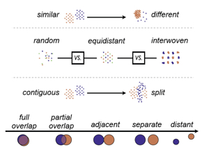

A Taxonomy of Visual Cluster Separation Factors

CGF (2012)
Authors
Michael Sedlmair, Andrada Tatu, Tamara Munzner, Melanie Tory
Materials
Abstract
We provide two contributions, a taxonomy of visual cluster separation factors in scatterplots, and an in-depth qualitative evaluation of two recently proposed and validated separation measures. We initially intended to use these measures to provide guidance for the use of dimension reduction (DR) techniques and visual encoding (VE) choices, but found that they failed to produce reliable results. To understand why, we conducted a systematic qualitative data study covering a broad collection of 75 real and synthetic high-dimensional datasets, four DR techniques, and three scatterplot-based visual encodings. Two authors visually inspected over 800 plots to determine whether or not the measures created plausible results. We found that they failed in over half the cases overall, and in over two-thirds of the cases involving real datasets. Using open and axial coding of failure reasons and separability characteristics, we generated a taxonomy of visual cluster separability factors. We iteratively refined its explanatory clarity and power by mapping the studied datasets and success and failure ranges of the measures onto the factor axes. Our taxonomy has four categories, ordered by their ability to influence successors: Scale, Point Distance, Shape, and Position. Each category is split into Within-Cluster factors such as density, curvature, isotropy, and clumpiness, and Between-Cluster factors that arise from the variance of these properties, culminating in the overarching factor of class separation. The resulting taxonomy can be used to guide the design and the evaluation of cluster separation measures.